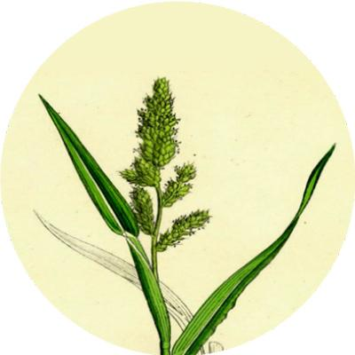
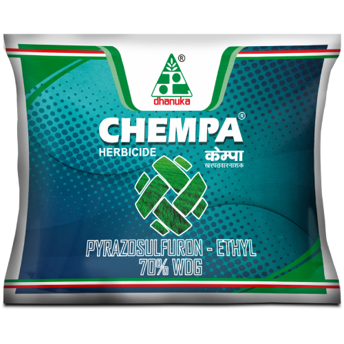
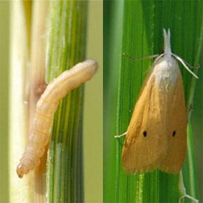
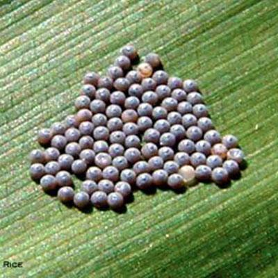
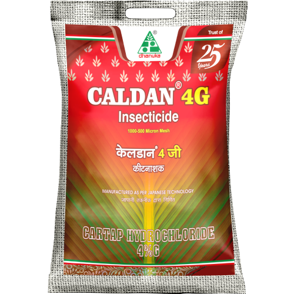
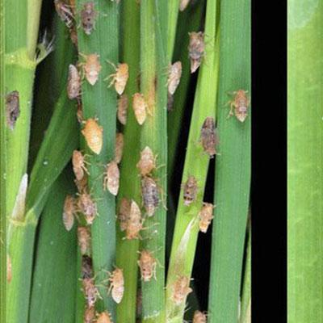
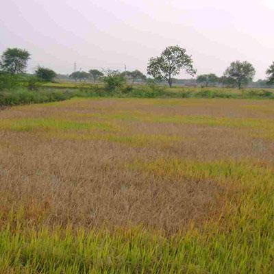

The cultivation of paddy crops is a cornerstone of Indian agriculture, requiring significant investments of time, effort, and resources from farmers. Their diligent work ensures that each paddy field produces a bountiful harvest, underscoring the importance of their contributions. Despite dedicated endeavours, stealth diseases pose a threat to the success of these efforts. This guide addresses prevalent paddy diseases, shedding light on insights and presenting solutions, focusing on the expertise offered by Dhanuka Agritech Limited in the agri-input sector
Paddy crops can be diseased due to several pathogens including fungi, bacteria, and viruses. These cause crop losses through reduced yields and poorer grain quality. The proper management of diseases is necessary for paddy cultivation to be sustainable for future food security and the constant expansion that will be needed. Identification of disease symptoms is the first step toward the prevention of various diseases.Fungal DiseasesBlast disease by Magnaporthe oryzae shows an explosive blast-like lesion on leaves, stem and grains. It spreads fast and can take a form causing huge losses to growers if not managed timely. Dhanuka suggests use of resistant varieties of rice and timely spraying with effective fungicides. Sheath-blight due to Rhizoctonia solani starts as water-soaked lesions on leaf-sheaths to become white and fluffy. It reduces stability and causes much loss. Proper drainage and fungicide application gives protection. Brown spot caused by Bipolaris oryzae is marked by small dark brown spots on leaves. Although it affects foliage mainly, in severe cases this can affect yields. High humidity and high density of planting enhance this disease. Combatting may be done through the system of rotation of crops and fungicide sprays. It affects a broad spectrum of plants, including tomatoes and bananas.
Weeds, Insectes & Diseases causes harms to the crop and farmers lose an estimated average of 37% of their rice crop due to pests & diseases every year. In addition to good crop management, timely and accurate diagnosis of these pest & diseases and proper chemical management can significantly reduce these losses.
| Pests Or Diseases | Recommended Product Solutions |
|---|---|
broad leaves weed |
 |
stem borer |
|
leaf folder |
 |
bph |
|
wbph |